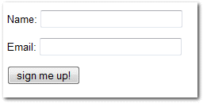

Automated Testing Overview & Best Practices
By: Randy Syring
Twitter: @RandySyring
...Software THAT WORKS!

Introduction

I'm the Chief Executive Developer at Level 12.
Level 12 is a web & database development firm that uses:
- solid engineering,
- proactive communication, and
- modern development practices
to make our customers really, really, happy.
Why it Matters to You
- Level 12 ... uses... modern development practices
- to make our customers really, really, happy
Net result: this works and is maintainable in the "real world"
Well, my "real world", YMMV
- Methods & concepts refined over last 7 years
- Primarily involved in web development (11 years)
- Not operating "at scale"
- Your context may differ
Some Numbers
Biggest app:
- 6+ years
- 7,800 Python tests
- 350 JS tests
- 200+ DB tables
- 91% code coverage
Newer app: 1 year, 1,230 Python tests, 35+ DB tables, 95% coverage
Let's Talk
- Guiding principles vs implementation
- Hopefully leaving time for discussion & feedback
Audience Survey
- Are testing your code?
- Are using automated tests?
- Have a build pipeline that integrates testing?
- Reasons for not using automated tests?
- What makes code "untestable"?
- What do you think of TDD?
I Don't Need No Stink'n Tests

I Don't...Need....ummm...help?
Test Types Overview
- unit tests: isolate
- integration tests: multiple components
- functional tests: end to end testing
- acceptance tests: alias for functional tests?
- sytem tests: infrastructure dependent testing
- qa tests: let a human break it
Your definitions may differ.
Other Test Terms
Where To Begin?
- Overwhelming, confusing, etc.
- Goal: high productivity
- Productivity vs efficiency, anyone?
Productive Testing
- Productive: creating or enhancing value
- Tests are an investment, invest wisely
- You are already testing, asset or expense?
Test Centric Development (TCD)
- do as much productive testing as possible
- acknowledges that we have limited resources
- takes into account the 80/20 principle (93%)
- gives the developer flexibility
- recognizes different contexts have different needs
- when done rightly, results in significant test coverage
- This is not a get out of TDD jail free card!
TCD Guiding Principles
- confidence and quality increase with testing
- developers write tests at the same time as the code
- default to writing tests first
- test core functionality as thoroughly as possible
- if resources limit testing, cheat less used and/or less important areas
- if the resources are available, test everything
- managers and stakeholders need to reinforce the importance of tests
A Final Plea
- You are already testing, capture the value!
- Good bridges aren't built without blueprints.
- Just get started.
- Good tests will lead to better code & greater confidence.
You Can't Afford Not To
No Automated Tests? Your World
Dealing with Objectors
- It's a culture issue, use language or metrics that resonate
- Look for a kindred spirit
- Become an evangelist
- Ignore them (if possible)
- Just start doing it, demonstrate the value
- Sacrifice some of your own time
- Consider finding a new job
Tip #1: Easy Stuff First
- Remember this is an investment, how much capital do you have?
- Focus on unit or functional testing, whichever makes the most sense.
- Avoid areas of the code that are harder to test (initially).
Tip #1: Easy Stuff First
Tip #2: Make Code Easier to Test
- Testing is a first-class activity
- You should modify your code to make it easier to test
Code Testability Example
import requests
def get_project_bandwidth(project_name):
url = 'https://pypi.python.org/pypi/{0}/json' \
.format(project_name)
resp = requests.get(url)
data = json.loads(resp.text)
total_bytes = 0
for url in data['urls']:
total_bytes += url['size'] * url['downloads']
return total_bytes
Code Testability Example
def get_project_bandwidth(project_name):
url = 'https://pypi.python.org/pypi/{0}/json' \
.format(project_name)
resp = requests.get(url)
return calc_urls_bandwidth(resp.text)
def calc_urls_bandwidth(json):
data = json.loads(json)
total_bytes = 0
for url in data['urls']:
total_bytes += url['size'] * url['downloads']
return total_bytes
Code Testability Example
def get_project_bandwidth(project_name):
url = 'https://pypi.python.org/pypi/{0}/json' \
.format(project_name)
resp = requests.get(url)
return calc_urls_bandwidth(resp.json)
def calc_urls_bandwidth(project_data):
total_bytes = 0
for url in project_data['urls']:
total_bytes += url['size'] * url['downloads']
return total_bytes
Tip #3: Easy Test Runs
Can't emphasize this enough, make it easy for people to run your tests!
$ git clone https://github.com/rsyring/bookorders example
$ cd example/
$ tox
[...snip...]
py34: commands succeeded
flake8: commands succeeded
congratulations :)
Huge confidence booster!
Tip #3: Easy Test Runs
- Our applications are portable
- We use a wheelhouse for dependencies.
- We can make some assumptions about the environment.
- Deviations are noted in the Readme
- Inability to run tests this way is a BUG!!
- Enforced by our CI environment
What are the challenges to doing this in your context?
Tip #4: Eat the Elephant
Focus on constant incremental improvements.
We have one simple rule: 'just increase code coverage by 1%'. We are constantly increasing code
coverage by writing more test cases. Even if the increase is small, it is still a good thing to do.
Credit: http://jodd.org/beta.html
Don't get bogged down by the chaos, just start and then increase little by little.
Tip #5: Failing Tests Are Never OK!
- Never commit (or accept a PR) if tests are failing
- Skips can be used when needed
- Failed CI builds should email, post to Slack, etc.
Tip #6: Test Runs Should Be Fast
- Fast code/test cycles are key
- Don't do premature optimization
- Make improvements where needed (cookie story)
- Know your test runner, work inside out
- Eventually depend on CI for a full test run
Tip #7: Know What You are [Not] Testing
Ask yourself regularily what you are trying to test
def contact_form(post_args):
form = SomeForm(post_args)
if form.is_completed():
send_contact_email(post_args['name'],
post_args['email'], post_args['body'])
else:
self.render(form.to_html())
Tip #8: Use Code Coverage Tools
Tip #8: Use Code Coverage Tools
Tip #9:
Tip #9: Automate All The Things
- A continuous integration (CI) environment brings great stability
- Put this in place ASAP, it will pay dividends
- Include as much as possible: testing, linting, complexity, code coverage
Thanks For Attending
By: Randy Syring
Twitter: @RandySyring
ROI graph credit: Leonard Fingerman, http://www.slideshare.net/lfingerman/test-automation-best-prcatices-with-soa-test-approach